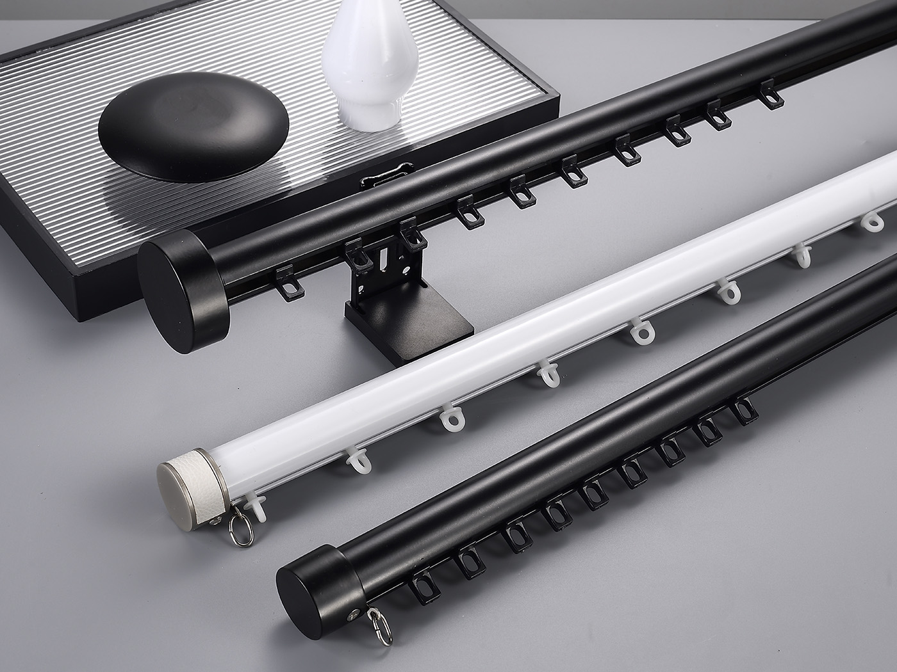
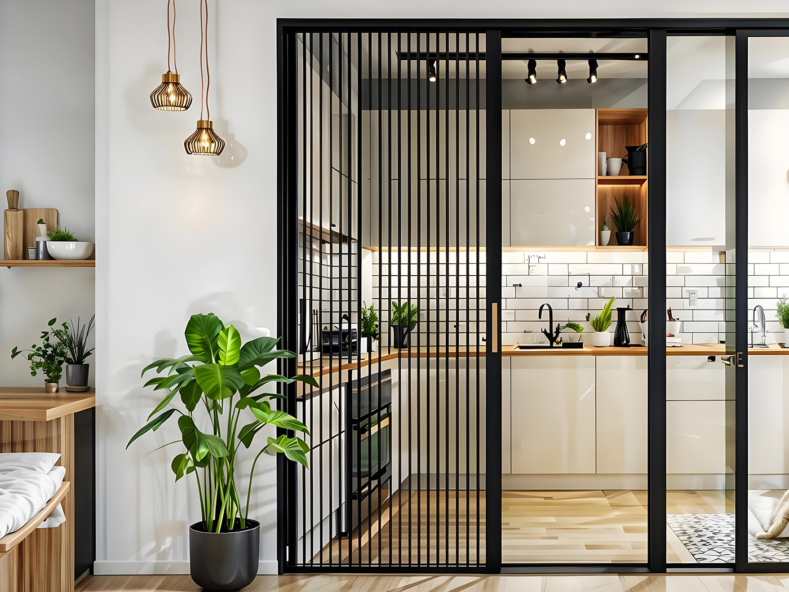

Product categories
System-Oriented Product Structure
The product structure is grouped by complete systems, compatible accessories, and project use. This helps buyers choose the right combination before RFQ.
Project type, installation method, track or rod system, accessory match, and required quantity.
Choose by system type, installation, and compatibility
The correct offer usually starts with the base system, then the matched accessories, then the installation type and project use condition.
We can quote track or rod, compatible accessories, mounting parts, and packing as one system package.

Curtain Track Systems
Aluminum, ceiling mount, wall mount, bendable, slim, and hospital track systems with matched accessories.
- I-Beam Bendable Curtain Track
- Small Square Curtain Track
- Medium Square Curtain Track
- Large Square Curtain Track
- Round Rod Track with Bottom Slot
- Recessed / Embedded Curtain Track
- Ultra-Slim Curtain Track
- Hospital Partition Curtain Track System

Curtain Rod Systems
Standard, heavy-duty, and decorative rod systems for residential and commercial use.
- Standard Curtain Rod
- Heavy Duty Rod
- Decorative Rod

Motor-Compatible Systems
Motor-ready tracks, belt systems, and accessory sets prepared for motor integration. Motors are optional and not the main product focus.
- Motor-ready curtain track
- Belt system
- Motor accessories for compatibility

Curtain Accessories
Carriers, gliders, rollers, brackets, connectors, end caps, hooks, rings, tapes, and other compatible components.
Track Accessories: carriers, rollers, connectors, end caps
Mounting Accessories: brackets, ceiling brackets, wall brackets
Curtain Components: hooks, rings, tapes, including ripple fold system

Sliding Screen Window / Sliding Folding Curtain
Sliding screen window and folding curtain systems for balcony, patio, window, and doorway projects.
- Sliding screen window system
- Sliding folding curtain system
- Track, mesh, frame, and accessory matching
- Project and OEM supply support

Project Solutions
Curtain system solutions for hotels, hospitals, room dividers, large windows, and commercial projects.
- Hotel Curtain System
- Hospital Curtain System
- Room Divider Curtain System
- Large Window Curtain System
Selection guide
How the system groups work
Each group below shows what the buyer chooses first and which compatible parts follow in the quotation.
| Category | What is included | Compatibility focus | Best fit |
|---|---|---|---|
| Curtain Track Systems | Track profiles by installation type and application | Carriers, connectors, end caps, ceiling or wall brackets | General commercial and project supply |
| Curtain Rod Systems | Standard, heavy-duty, and decorative rod options | Bracket strength, ring type, and curtain component match | Residential projects and wider openings |
| Motor-Compatible Systems | Motor-ready track, belt system, and matched accessories | Profile, belt path, and motor interface compatibility | Automation-ready curtain projects |
| Curtain Accessories | Track accessories, mounting accessories, curtain components | Track profile, installation type, and curtain style match | System completion and repeat orders |
| Sliding Screen Window / Sliding Folding Curtain | Sliding screen window or folding curtain system with matched track, mesh, frame, and accessories | Opening size, installation direction, mesh or curtain style, and accessory set | Balcony, patio, doorway, window, and residential project supply |
| Project Solutions | Recommended system packages by use case | Track, accessories, and mounting method selected together | Hotels, hospitals, room dividers, and large windows |
Featured system
Hospital curtain track system page
The category summary opens into a system page with specifications, accessory matching, installation notes, and direct inquiry action.

Hospital Curtain Track System
A divider system product page that presents the full system, matched accessories, mounting method, and project use together.
- Complete system structure instead of loose separate parts
- Component matching shown clearly for project buyers
- Specification table focused on installation and layout
- Direct inquiry action for wholesale and project RFQ